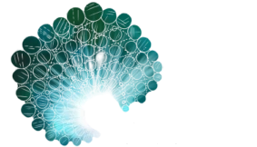

1:1 Family Constellations Sessions
One-to-one sessions in North London or online via Zoom

What is Family Constellations Therapy?
Family Constellations Therapy (also known as Systemic Constellations) is a therapeutic approach that explores how family history, unconscious loyalties, and generational patterns can influence our lives today.
Many of the difficulties we experience, such as feeling stuck, repeating familiar patterns, or carrying emotions that don't quite feel like our own, can be connected to unresolved experiences within our family system. While these patterns may have been passed down through generations, they are not necessarily ours to carry.
Family Constellations Therapy brings awareness to these hidden dynamics, creating space for release, reconnection, and change. This work supports movement where things have felt inherited or stuck, and can help you reconnect more fully with yourself.
My approach is grounded in trauma-informed and psychological awareness, while also honouring the systemic and experiential nature of constellation work.
1:1 sessions are 90 minutes.
Fee:
£250 online · £290 in person
What to expect from a 1:1 session
In a one-to-one Family Constellations session, we work together to explore a specific theme or question you bring. The process is experiential rather than purely conversational, allowing insight to emerge through felt experience as well as reflection.
No prior experience is needed. Sessions are offered in person at my London practice or online via Zoom, and take place at a pace that supports safety, regulation, and integration.
How to prepare
There is no formal preparation required. This work often unfolds gently and organically, meeting you where you are.
After the session & integration
Each session is unique, and people experience a wide range of responses: emotional, physical, reflective, or subtle. There is no "right" way to feel afterwards.
Family Constellations Therapy differs from ongoing weekly therapy. Sessions may stand alone, or be revisited when it feels supportive. If you choose to book another session, I recommend allowing at least 2–3 weeks between sessions to support integration.
Many people also find it helpful to integrate this work alongside other supportive approaches such as psychotherapy, somatic therapy, or body-based practices.
Further reading
What is Family Constellations Therapy? (Welldoing)
Parenting Constellations with Sara Poss & Betsy Gibson (The CSC)
Constellations are a process for expanding understanding and awareness. They are not a diagnostic or treatment method for any psychological condition or disorder.